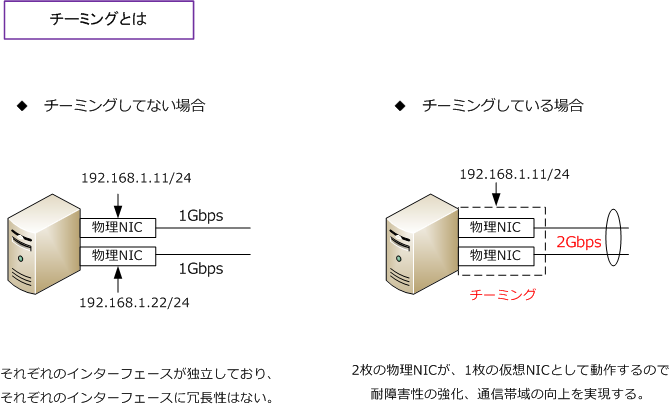
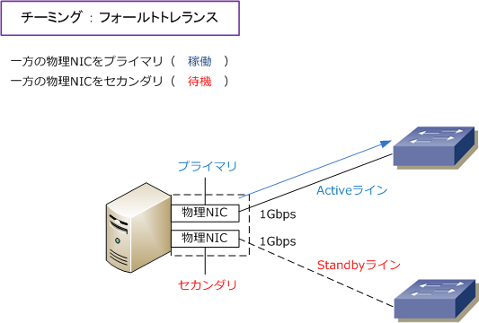
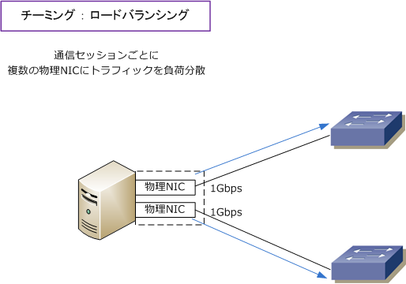
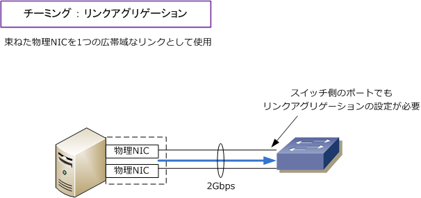
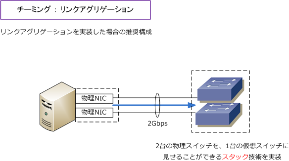
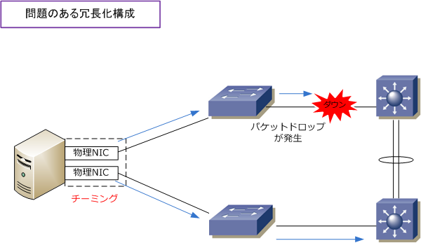
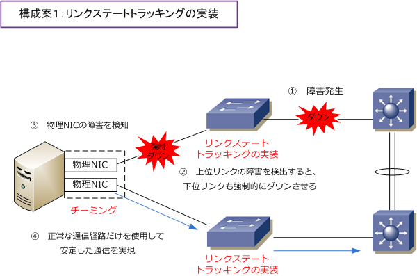
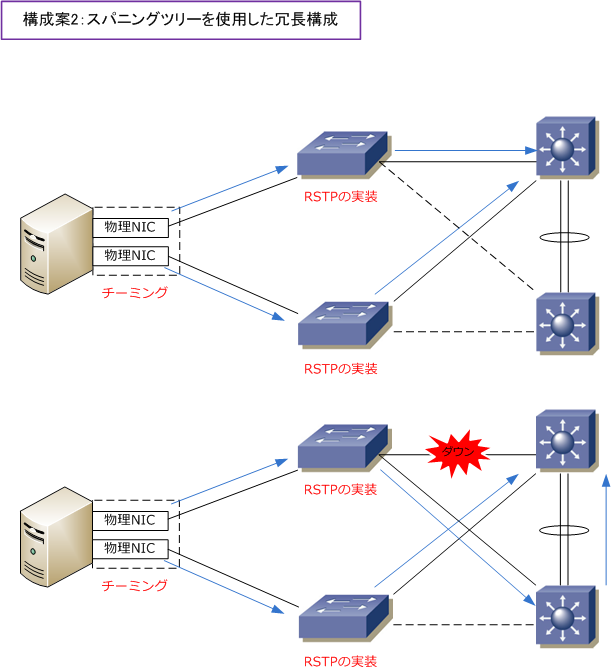

NIC teaming
チーミングとは（NICチーミングとは）
チーミングとは、サーバ等に搭載した物理NIC（ネットワークアダプタ）を1つの仮想的なNICとして束ねる 技術のことです。チーミングはNICチーミング（Network Interface Card Teaming）とも呼ばれています。
チーミングにより耐障害性の強化、使用帯域の向上などが実現します。LANスイッチ側の冗長化だけでなく、 サーバ側の物理NICで冗長化することで、システム全体の耐障害性が強くなります。なお、チーミングを行う ためにはOS側ではなく搭載された物理NICとそのドライバソフトがチーミングに対応している必要があります。

※ Linuxでは Bonding（ボンディング）ドライバを使用していることから、チーミングのことをボンディングと呼んでいます。
チーミングの種類
チーミングには、フォールトトレランス、リンクアグリゲーション、ロードバランシングの3種類があります。 フォールトトレランスでは物理NICを束ねて1つをプライマリ（稼働）1つをセカンダリ（待機）として使用。 プライマリの物理NICやケーブルに障害が発生した場合、セカンダリの物理NICで通信を行うようになります。

ロードバランシングでは、物理NICを束ねて冗長性を持たせるだけでなく、同時に複数の物理NICを使用して トラフィックを負荷分散を行います。通信セッションごとに複数の物理NICにトラフィックを分散させる方式。 それぞれの各通信は物理NIC1枚だけで処理されます。これにより同時に複数の物理NICを使用することになり スループットは向上します。どちらかの物理NICに障害が発生しても残りの物理NIC経由で通信を継続します。 ※ リンクアグリゲーションと混同しそうですが、IEEE 802.3adモードではスイッチが受信パケットのロードバランシングを実現。

リンクアグリゲーションでは物理NICを束ねて冗長性を持たせるだけでなく、同時に複数の物理NICを使用し 帯域幅を増加させる方式です。この方式では論理的に完全に1リンクとなります。その他の方式と同じように、 どちらかの物理NICやケーブルに障害が発生しても、もう一方の物理NICで通信を継続できます。この方式を 実装した場合、チーミングを設定したサーバが接続するLANスイッチでもリンクアグリゲーション設定が必要。 ※ 802.3ad 動的リンク・アグリゲーション・モードで双方向のアグリゲーションが利用できる場合のみ転送量を増やすことになります。

ネットワーク設計の注意点 ( チーミング ： リンクアグリゲーション )
リンクアグリゲーションを実装した構成ではスイッチをまたいでリンクアグリゲーション設定はできないので 上図の通りLANスイッチは1台にしてリンクアグリゲーションの設定を行う必要があります。しかしこの構成は 問題点があります。サーバで物理NICを冗長化しても接続スイッチが1台なのでシングルポイントが生まれます。
そこでサーバ側でリンクアグリゲーションのチーミングを設定する場合、物理スイッチを仮想的に1台に見せる スタック技術対応の製品を導入することが推奨です。スタック可能なスイッチでは、2台のスイッチにまたがり リンクアグリゲーションの実装が可能となり耐障害性が強化されます。

ネットワーク設計の注意点 ( 冗長化構成 )
紹介した3種類のチーミングでは、サーバ側の物理NICに障害が発生した場合は当然検知することができますが L2スイッチと上位のL3スイッチ間のリンクで障害が発生しても検知することはできません。従って下図構成で L2スイッチ ⇔ L3スイッチのリンク障害が発生すると障害をサーバで検知できない結果、通信に不具合が発生。

上図の問題を発生させないための適正な冗長化されたネットワーク構成案には、以下の2つの案があります。 1つ目はリンクステートトラッキング機能の実装です。リンクステートトラッキングは、スイッチ上で指定 したリンク（例えば上位リンク）に障害が発生すると、関連づけたリンク（例えば下位リンク）を強制的に ダウンさせる仕組み。これで、サーバでチーミングを行っていても、下図のフロー通り安定した通信を実現。

2つ目はスパニングツリーを実装した冗長構成。プロトコルは高速収束できるRSTPの使用が推奨です。
